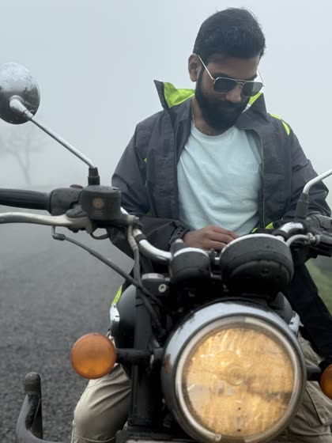
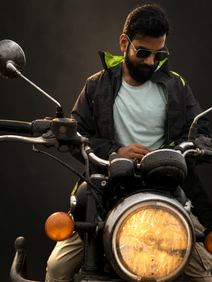
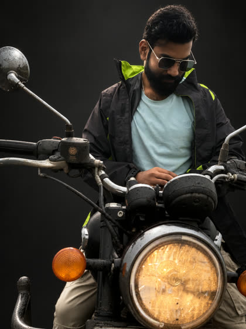
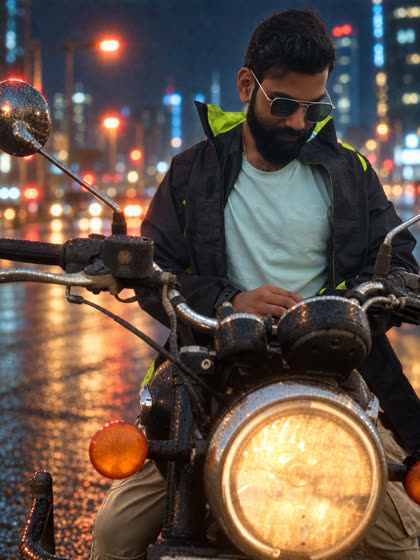
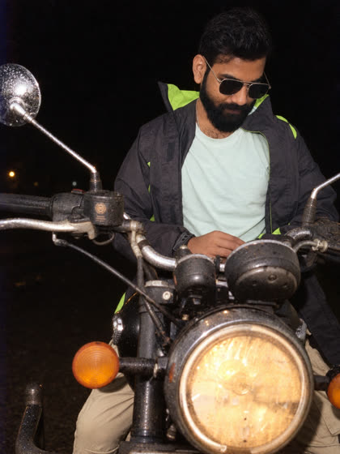
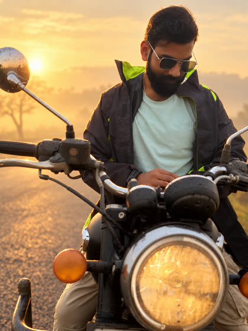
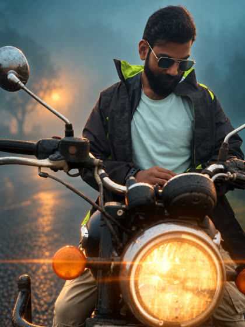

ChatGPT photo ke 20 secret codes
@shashikant.ai · comment CODE · tested 10 Oct 2026 on my own photo
Asli photo (dhund, phone se)

Formula
Photo upload karo, phir likho:
Re-shoot this … <CODE> … Keep my face, hair, beard and clothes exactly as in the uploaded photo.Code 20: face lock line, hamesha end mein. Mere test mein is line ke bina ChatGPT ne mera chehra badal diya:

❌ bina line

✓ line ke saath
✅ Maine test kiye (meri bike photo pe)
1. CineStill 800T
Raat ka shehar: laal-neeli lights, geeli sadak pe chamak

Re-shoot this at night on CineStill 800T film, city lights behind me. Keep my face, hair, beard and clothes exactly as in the uploaded photo.2. disposable camera, direct flash
Party wali flash photo, peeche andhera

Re-shoot this as a night photo on a disposable camera with direct flash. Keep my face, hair, beard and clothes exactly as in the uploaded photo.3. golden hour, rim light
Sunset glow, baalon ke kinare sunehri line

Re-shoot this at golden hour with warm rim light. Keep my face, hair, beard and clothes exactly as in the uploaded photo.4. anamorphic lens
Hollywood film look, lambi flare line

Re-shoot this as a cinematic film still, anamorphic lens, teal and orange colour grade. Keep my face, hair, beard and clothes exactly as in the uploaded photo.5. Rembrandt lighting
Studio portrait: ek taraf roshni, gaal pe triangle
Re-light this portrait with Rembrandt lighting against a dark studio background. Keep my face, hair, beard and clothes exactly as in the uploaded photo.⚠️ Test kiya, asar halka
6. Kodak Portra 400
Garam film colours, soft skin. Mere test mein asar halka tha: dusre code ke saath jodo.
Re-shoot this exact photo on Kodak Portra 400 film. Keep my face, hair, beard and clothes exactly as in the uploaded photo.Abhi test nahi kiye (try karo, result comment karo)
7. Fujifilm Superia 400
Thoda hara-neela, 2000s wali family photo
Re-shoot this on Fujifilm Superia 400 film. Keep my face, hair, beard and clothes exactly as in the uploaded photo.8. Kodak Tri-X 400
Black & white, grain wala, documentary look
Re-shoot this in black and white on Kodak Tri-X 400 film. Keep my face, hair, beard and clothes exactly as in the uploaded photo.9. Polaroid SX-70
Instant photo, faded colours, white frame
Turn this into a Polaroid SX-70 photo. Keep my face, hair, beard and clothes exactly as in the uploaded photo.10. 85mm f/1.8
Portrait lens: background blur (DSLR jaisa)
Re-shoot this portrait with an 85mm lens at f/1.8, shallow depth of field. Keep my face, hair, beard and clothes exactly as in the uploaded photo.11. 24mm, low angle
Wide, neeche se: hero entry wala shot
Re-shoot this with a 24mm wide lens from a low angle. Keep my face, hair, beard and clothes exactly as in the uploaded photo.12. tilt-shift
Duniya miniature (khilona) jaisi lagegi
Make this look like a tilt-shift photo. Keep my face, hair, beard and clothes exactly as in the uploaded photo.13. blue hour
Sooraj dhalne ke baad ka neela aasmaan
Re-shoot this at blue hour, just after sunset. Keep my face, hair, beard and clothes exactly as in the uploaded photo.14. neon sign light
Ek taraf pink/neela neon glow
Re-light this with a pink and blue neon sign next to me. Keep my face, hair, beard and clothes exactly as in the uploaded photo.15. softbox studio light
Saaf, soft studio portrait (LinkedIn/profile)
Re-shoot this as a clean studio portrait with a large softbox. Keep my face, hair, beard and clothes exactly as in the uploaded photo.16. harsh noon sun
Tez dhoop, gehri shadows, fashion look
Re-shoot this in harsh noon sunlight with strong shadows. Keep my face, hair, beard and clothes exactly as in the uploaded photo.17. rain, wet street reflections
Baarish, geeli sadak pe reflection
Re-shoot this in light rain with reflections on the wet street. Keep my face, hair, beard and clothes exactly as in the uploaded photo.18. shot on iPhone, night mode
Asli phone jaisi raat ki photo (over-edit nahi)
Re-shoot this as an iPhone night mode photo. Keep my face, hair, beard and clothes exactly as in the uploaded photo.19. 35mm film grain, faded
Purani film, thoda faded, grain
Re-shoot this on faded 35mm film with visible grain. Keep my face, hair, beard and clothes exactly as in the uploaded photo.Yaad rakho: film · lens · light
Ek film + ek lens + ek light jodo, jaise:
CineStill 800T, 85mm f/1.8, neon sign lightUs dost ko bhejo jo har trend ka prompt dhoondhta rehta hai 📸